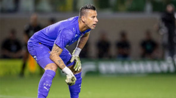

futebol
Luis Roberto se afasta para tratamento médico e fica fora de transmissões da Copa do Mundo
Narrador é diagnosticado com neoplasia na região cervical
Há 13 minutos — Em futebol
categoria
Jardim tem cinco desfalques e fará mudanças para estreia na Libertadores
Equipe rubro-negra enfrenta o Cusco nesta quarta-feira, às 21h30, a 3.350 metros acima do nível do mar
Há 9 minutos — Em flamengo
categoria
Fábio se torna o jogador mais velho a atuar na Libertadores
Aos 45 anos, jogador supera boliviano Luis Galarza, que mantinha recorde desde 1995
Há 8 minutos — Em fluminense